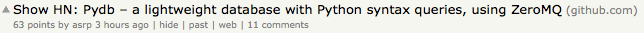
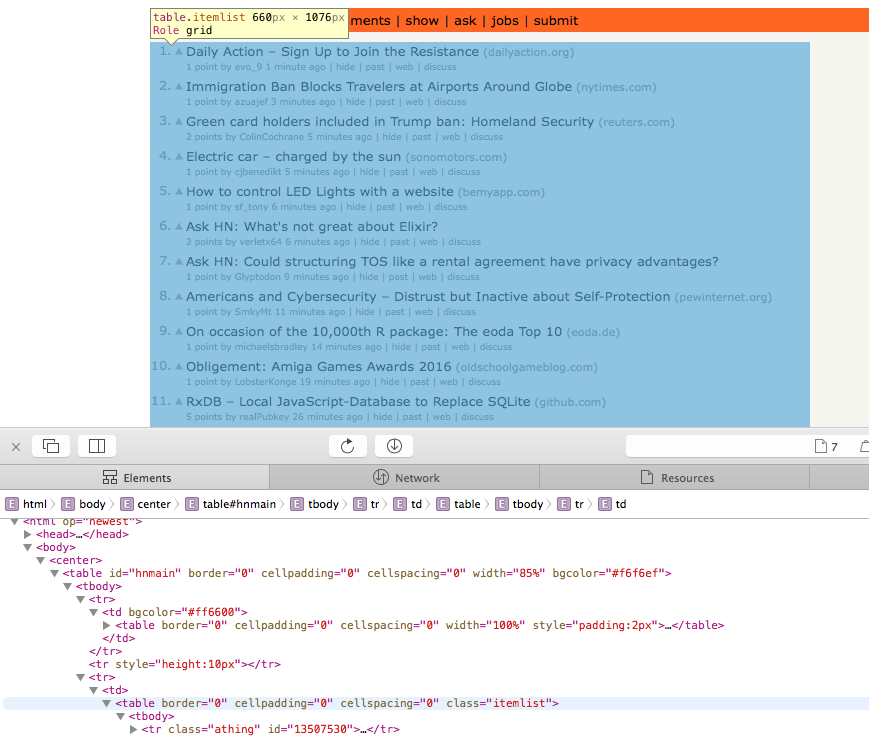
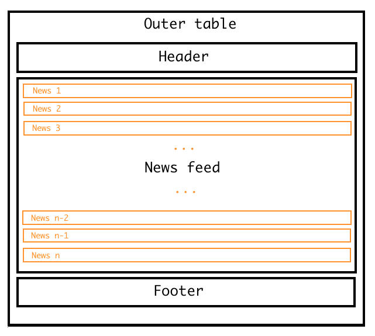
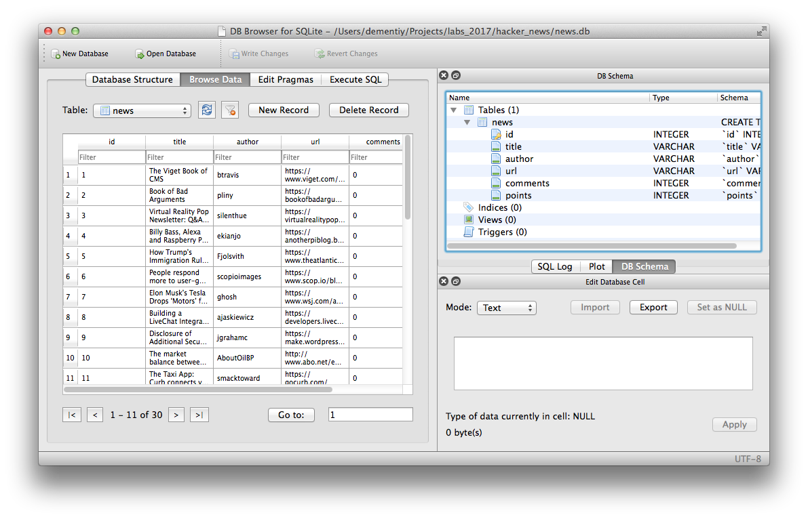
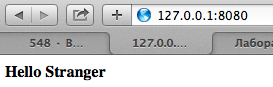
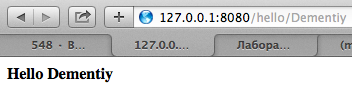
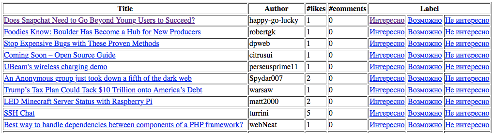

Hackernews
В этой работе вашей задачей является написание простого персонализированного новостного агрегатора.
Для выполнения этого задания вам потребуется собирать и размечать новости из одного или нескольких источников. В качестве поясняющего примера будем использовать социально-новостной сайт Hacker News.
Сбор данных
В предыдущих работах вы уже сталкивались с модулем requests, который позволяет отправлять запросы по HTTP-протоколу.
Вспомним, что есть два распространенных типа запросов: GET и POST (в действительности их гораздо больше).
В запросе типа GET информация, передаваемая серверу, расположена в ссылке, которую в случае использования веб-браузера вы можете видеть в адресной строке.
Например, если вы перейдёте по адресу https://translate.google.com/?hl=ru#en/ru/python, то тем самым вы запросите у сервиса Google Translate перевод слова python с английского языка на русский (параметры запроса указываются после символа ?).
POST-запрос используется в случаях отправки каких-либо форм (авторизация на сайте), больших объемов данных, загрузки файлов на сервер. В таком случае параметры запроса не будут отображаться в адресной строке, а будут расположены в теле запроса. Подробнее о структуре http-запросов можно узнать здесь
Мы пока будем использовать запросы только типа GET.
Давайте выполним два разных GET-запроса к новостному сайту:
>>> import requests
>>> r = requests.get("https://news.ycombinator.com/newest")
>>> r.ok
True
>>> r.status_code
200
>>> r = requests.get("https://news.ycombinator.com/abrakadabra")
>>> r.ok
False
>>> r.status_code
404
Note
Если у вас не установлен модуль requests, то вы можете установить его командой pip install requests или python -m pip install requests.
Первый запрос был выполнен успешно, о чем говорит значение True свойства r.ok и значение 200 свойства r.status_code. Возвращаемый код запроса (status_code) может содержать много полезной информации о доступности или расположении запрошенного ресурса, о состоянии сервера или возникших в процессе выполнения запроса ошибках. Подробнее о кодах ответов и их значениях можно узнать здесь
Второй запрос был выполнен к несуществующей странице, что привело к ошибке «404 - Не найдено».
Доступ к содержимому страницы можно получить с помощью атрибута text (для примера выведены первые 100 символов):
>>> r.text[:100]
'<html op="newest"><head><meta name="referrer" content="origin"><meta name="viewport" content="width='
Как вы видите, это простая HTML-страница, из которой нам нужно извлечь интересующую нас информацию, а именно:
- заголовок новости;
- автора новости;
- ссылку на новость;
- количество комментариев;
- количество «лайков», которое набрала статья.
Например, в следующей новости:

- заголовок - Show HN: Pydb – a lightweight database with Python syntax queries, using ZeroMQ;
- автор - asrp;
- ссылка - https://github.com;
- количество комментариев - 11;
- количество «лайков» - 63.
Для извлечения данных с веб-страниц существует множество разных модулей. Проблема с HTML в том, что большинство браузеров ведет себя «прощающе» относительно страниц, написанных не по стандартам HTML. Впрочем, обработка даже не полностью корректного HTML-кода не так сложна, если под рукой есть подходящие инструменты. Мы будем пользоваться модулем Beautiful Soup 4.
Note
Если у вас не установлен модуль bs4, то вы можете установить его командой pip install bs4 или python -m pip install bs4.
Для использования Beautiful Soup нужно передать текст веб-страницы (в виде одной строки) функции BeautifulSoup. Чтобы он не "ругался", также следует указывать название парсера (той программы, которая осуществляет обработку HTML). С целью совместимости я использую html.parser (он входит в пакет Python и не требует дополнительной установки), но вы можете также попробовать использовать html5lib, если он у вас установлен.
>>> from bs4 import BeautifulSoup
>>> page = BeautifulSoup(r.text, 'html.parser')
>>> page
<html op="newest"><head><meta content="origin" name="referrer"><meta content="width=device-width, initial-scal
e=1.0" name="viewport"><link href="news.css?5kjS59ufyw5qyqpjcavc" rel="stylesheet" type="text/css">
<link href="favicon.ico" rel="shortcut icon">
...
Перменная page представялет собой не просто строковое содержимое HTML-страницы. Это объект, который позволяет в удобной форме обращаться к HTML-тегам.
Например, мы можем обратиться к тегу head, а внутри него к тегу title:
>>> page.head.title
<title>New Links | Hacker News</title>
>>> page.head.title.text
'New Links | Hacker News'
Для лучшего понимания структуры HTML-страницы следует воспользоваться веб-инспектором, который есть в большинстве современных браузеров.

Если вы посмотрите на структуру HTML-страницы, то сможете заметить, что есть внешняя таблица, которая включает в себя еще три таблицы: заголовок, новостную ленту (которая, в свою очередь, также состоит из множества строк) и подложку (см. рисунок ниже).

Возникает вопрос: «Как обратиться к внутренним таблицам?». Если мы дважды обратимся к атрибуту table, то получим заголовок:
>>> page.table.table
<table border="0" cellpadding="0" cellspacing="0" style="padding:2px" width="100%"><tr><td style="width:18px;p
adding-right:4px"><a href="http://www.ycombinator.com"><img height="18" src="y18.gif" style="border:1px white
solid;" width="18"/></a></td>
<td style="line-height:12pt; height:10px;"><span class="pagetop"><b class="hnname"><a href="news">Hacker News<
/a></b>
<span class="topsel"><a href="newest">new</a></span> | <a href="newcomments">comments</a> | <a href="show">sho
w</a> | <a href="ask">ask</a> | <a href="jobs">jobs</a> | <a href="submit">submit</a> </span></td><td style="t
ext-align:right;padding-right:4px;"><span class="pagetop">
<a href="login?goto=newest">login</a>
</span></td>
</tr></table>
У объекта page (помимо атрибутов) есть функции, одной из которых является findAll, позволяющая найти несколько элементов с одинаковыми тегами:
>>> tbl_list = page.table.findAll('table')
>>> len(tbl_list)
3
Соответственно, нулевой элемент списка tbl_list это таблица с заголовком, первый элемент списка - таблица с новостями, а второй элемент списка - подложка.
На текущий момент вашей задачей является написать две функции extract_news() и extract_next_page(), для корректной работы функции get_news(), которая в качестве аргументов принимает url и n_pages (число страниц, с которых необходимо собрать новости), а возвращает список словарей, где каждый словарь представляет собой запись об одной новости (пример вывода смотрите ниже):
>>> news_list = get_news("https://news.ycombinator.com/newest", n_pages=2)
Collecting data from page: https://news.ycombinator.com/newest
Collecting data from page: https://news.ycombinator.com/newest?next=15852221&n=31
>>> pp(news_list[:3])
[{'author': 'evo_9',
'comments': 0,
'points': 1,
'title': 'Daily Action – Sign Up to Join the Resistance',
'url': 'https://dailyaction.org/'},
{'author': 'azuajef',
'comments': 0,
'points': 1,
'title': 'Immigration Ban Blocks Travelers at Airports Around Globe',
'url': 'https://www.nytimes.com/2017/01/28/us/refugees-detained-at-us-airports-prompting-legal-challenges-to
-trumps-immigration-order.html?_r=0'},
{'author': 'ColinCochrane',
'comments': 0,
'points': 7,
'title': 'Green card holders included in Trump ban: Homeland Security',
'url': 'http://mobile.reuters.com/article/idUSKBN15C0KX'}]
Сохранение данных в sqlite
Собираемые данные нужно где-то хранить. Мы будем использовать для хранения SQLite - компактную встраиваемую реляционную базу данных. В стандартной библиотеке языка Python есть модуль sqlite3, который предоставляет интерфейс для работы с SQLite. Этот модуль требует знания языка SQL, поэтому мы воспользуемся другой технологией, которая называется ORM.
ORM (англ. object-relational mapping, рус. объектно-реляционное отображение) — технология программирования, которая связывает базы данных с концепциями объектно-ориентированных языков программирования, создавая "виртуальную объектную базу данных".
SQLAlchemy — библиотека на языке Python для работы с реляционными СУБД с применением технологии ORM. Использлуется для синхронизации объектов Python и записей реляционной базы данных. SQLAlchemy позволяет описывать структуры баз данных и способы взаимодействия с ними на языке Python без использования SQL.
Note
Подробную статью по работе с SQLAlchemy можно найти тут.
Каждая таблица описывается классом, который должен наследоваться от базового класса, создаваемого функцией sqlalchemy.ext.declarative.declarative_base().
В рассматриваемом нами примере будет только один класс News с следующими атрибутами: заголовок, автор, ссылка, количество комментариев и число лайков.
from sqlalchemy.ext.declarative import declarative_base
from sqlalchemy import Column, String, Integer
from sqlalchemy import create_engine
from sqlalchemy.orm import sessionmaker
Base = declarative_base()
engine = create_engine("sqlite:///news.db")
session = sessionmaker(bind=engine)
class News(Base):
__tablename__ = "news"
id = Column(Integer, primary_key = True)
title = Column(String)
author = Column(String)
url = Column(String)
comments = Column(Integer)
points = Column(Integer)
label = Column(String)
Base.metadata.create_all(bind=engine)
Note
Обратите внимание на поле label, оно нам понадобится в разделе «Разметка данных».
Функция sqlalchemy.create_engine() создает новый экземпляр класса sqlalchemy.engine.Engine, который отвечает за подключение к базе данных.
Что касается создаваемой сессии, то вот небольшая выдержка о назначении сессиий из официальной документации:
Quote
In the most general sense, the Session establishes all conversations with the database and represents a «holding zone» for all the objects which you’ve loaded or associated with it during its lifespan. It provides the entrypoint to acquire a Query object, which sends queries to the database using the Session object’s current database connection, populating result rows into objects that are then stored in the Session, inside a structure called the Identity Map - a data structure that maintains unique copies of each object, where «unique» means «only one object with a particular primary key».
The Session begins in an essentially stateless form. Once queries are issued or other objects are persisted with it, it requests a connection resource from an Engine that is associated either with the Session itself or with the mapped Table objects being operated upon. This connection represents an ongoing transaction, which remains in effect until the Session is instructed to commit or roll back its pending state.
All changes to objects maintained by a Session are tracked - before the database is queried again or before the current transaction is committed, it flushes all pending changes to the database. This is known as the Unit of Work pattern.
When using a Session, it’s important to note that the objects which are associated with it are proxy objects to the transaction being held by the Session - there are a variety of events that will cause objects to re-access the database in order to keep synchronized. It is possible to «detach» objects from a Session, and to continue using them, though this practice has its caveats. It’s intended that usually, you’d re-associate detached objects with another Session when you want to work with them again, so that they can resume their normal task of representing database state.
Более подробно о сессиях можно прочитать тут.
Далее приведен пример создания объекта и сохранения его в БД:
>>> s = session()
>>> news = News(title='Lab 7',
author='dementiy',
url='https://dementiy.gitbooks.io/-python/content/lab7.html',
comments=0,
points=0)
>>> news.id, news.title
(None, Lab 7)
>>> s.add(news)
>>> s.commit()
>>> news.id, news.title
(1, Lab 7)
Обратите внимание, что идентификатор объекта id содержит значение None до тех пор, пока мы не сделаем коммит этого объекта в БД с помощью метода commit()
На текущий момент вашей задачей является сохранение не менее 1000 записей с новостного сайта в БД (на каждой странице по 30 новостей). Просмотреть содержимое файла news.db можно с помощью программы DB Browser for SQLite:

Разметка данных
Как разметить имеющиеся данные? Давайте создадим простую HTML-страницу, на которой будем выводить список неразмеченных новостей, а рядом с каждой новостью будет несколько кнопок со следующими метками:
- «Интересно» - эта новость вам показалась интересной, и вы ее прочитали;
- «Не интересно» - эта новость вас не интересует;
- «Возможно прочитаю» - вы сомневаетесь - интересна вам эта новость или нет.
Note
Меток может быть больше. Кроме того мы можем использовать численное значение для оценки нашего отношения к новости, например, от 0 до 5.
По нажатию на кнопку должно происходить добавление метки в БД к соответствующей новости и удаления новости из списка неразмеченных новостей, так как мы ее уже разметили.
Для создания такой веб-страницы воспользуемся простым и популярным веб-фреймворком bottle.
Давайте рассмотрим простой пример из документации к этому фреймворку:
from bottle import route, run, template
@route('/')
@route('/hello/<name>')
def index(name="Stranger"):
return template('hello_template', name=name)
run(host='localhost', port=8080)
<!-- hello_template.tpl -->
<b>Hello {{name}}</b>
Функция run запускает веб-сервер по адресу localhost:8080 (см. скриншоты ниже), обрабатывающий запросы до тех пор, пока вы его не остановите комбинацией Ctrl+С.


route это функция-декоратор, которая отвечает за маршрутизацию и связывает адрес ресурса (веб-страницы) с функцией, которая должна быть вызвана при обращении к этому ресурсу.
В нашем примере функция index отвечает за два разных маршрута: / и /hello/<name>. Второй маршрут является динамическим, так как он соответствует не одному ресурсу, а целому множеству разных ресурсов: /hello/dementiy, /hello/alice, /hello/bob и т.д.
Шаблон (wildcard) заключается в угловые скобки < и >, а имя аргумента функции должно совпадать с именем, указанным в шаблоне (в нашем случае это name).
В bottle реализован механизм шаблонов, предназначенный для генерации веб-страниц. Для начала работы с шаблонизатором достаточно воспользоваться функцией template, которая в качестве первого аргумента принимает имя файла, содержащего текст шаблона (в нашем случае это hello_template.tpl). Затем следует список необязательных именованных аргументов, которые нужно передать шаблонизатору (в нашем примере это name).
Вернемся к нашему примеру. Напишем функцию, которая будет отвечать за маршрут news и выводить список неразмеченных новостей.
@route('/news')
def news_list():
s = session()
rows = s.query(News).filter(News.label == None).all()
return template('news_template', rows=rows)
<!-- news_template.tpl -->
<!DOCTYPE html>
<html>
<head>
<link rel="stylesheet" href="//cdnjs.cloudflare.com/ajax/libs/semantic-ui/2.2.12/semantic.min.css"></link>
<script src="https://cdnjs.cloudflare.com/ajax/libs/jquery/3.1.1/jquery.min.js"></script>
<script src="https://cdnjs.cloudflare.com/ajax/libs/semantic-ui/2.2.12/semantic.min.js"></script>
</head>
<body>
<div class="ui container" style="padding-top: 10px;">
<table class="ui celled table">
<thead>
<th>Title</th>
<th>Author</th>
<th>#Likes</th>
<th>#Comments</th>
<th colspan="3">Label</th>
</thead>
<tbody>
%for row in rows:
<tr>
<td><a href="{{ row.url }}">{{ row.title }}</a></td>
<td>{{ row.author }}</td>
<td>{{ row.points }}</td>
<td>{{ row.comments }}</td>
<td class="positive"><a href="/add_label/?label=good&id={{ row.id }}">Интересно</a></td>
<td class="active"><a href="/add_label/?label=maybe&id={{ row.id }}">Возможно</a></td>
<td class="negative"><a href="/add_label/?label=never&id={{ row.id }}">Не интересно</a></td>
</tr>
%end
</tbody>
<tfoot class="full-width">
<tr>
<th colspan="7">
<a href="/update_news" class="ui right floated small primary button">I Wanna more Hacker News!</a>
</th>
</tr>
</tfoot>
</table>
</div>
</body>
</html>
Пример таблицы:

Обратите внимание на запрос к БД: s.query(News).filter(News.label == None).all():
- Мы обращаемся к таблице
Newsс помощьюquery(News) - Фильтруем записи. Нам нужны только те, которые не имеют метки:
filter(News.label == None) - Все полученные через
all()записи передаем в шаблон
В шаблоне мы формируем таблицу со списком неразмеченных новостей. Вы можете заметить, что в шаблоне допустимо использовать управляющие конструкции, такие как цикл for (end указывает на завершение тела цикла).
И последнее на что стоит обратить внимание: у нас есть три ссылки «Интересно», «Не интересно» и «Возможно». Переход по каждой из которых должен обрабатываться функцией, связанной с маршрутом add_label. Также происходит передача двух параметров label (нашей метки, со значениями good, maybe, never) и идентификатора новости id (вспомним, что каждая новость имеет уникальный числовой идентификатор, который она получает при добавлении в БД).
Вашей задачей является написание функции, которая бы добавляла метку к указанной новости и затем возвращала бы нас на страницу news:
from bottle import redirect
@route('/add_label')
def add_label():
# 1. Получить значения параметров label и id из GET-запроса
# 2. Получить запись из БД с соответствующим id (такая запись только одна!)
# 3. Изменить значение метки записи на значение label
# 4. Сохранить результат в БД
redirect('/news')
Также напишите функцию, которая бы добавляла свежие новости в БД:
@route('/update_news')
def update_news():
# 1. Получить данные с новостного сайта
# 2. Проверить, каких новостей еще нет в БД. Будем считать,
# что каждая новость может быть уникально идентифицирована
# по совокупности двух значений: заголовка и автора
# 3. Сохранить в БД те новости, которых там нет
redirect('/news')
Классификация данных
В этом разделе вашей задачей является написание простого классификатора, который бы выводил неразмеченные новости в следующем порядке: сначала идут интересные для нас новости, затем те, которые мы бы возможно прочитали, и в конце - неинтересные новости.
Итак, у нас есть корпус, состоящий из размеченных и неразмеченных документов (новостей). Возникает два вопроса: «Каким образом каждой свежей новости присвоить одну из меток (классов)?» и «Как оценить нашу классификацию?».
Для более качественной классификации мы будем использовать наивный байесовский классификатор. Если вы не знакомы с теоремой Байеса, то можете прочитать исчерпывающее объяснение от Юдковски (есть перевод и на русский язык). Также, для пояснения работы наивного байесовского классификатора я буду ссылаться на статью в Википедии.
Итак, вопрос на который мы отвечаем: «Какова вероятность, что документ D принадлежит классу C?» или в более строгой записи: чему равно P(D \mid C)? Документом D у нас является новость, а классом C - одна из трех возможных меток: «Интересно», «Не интересно», «Возможно».
Документ представляется множеством независимых слов (это лишь предположение, которого мы придерживаемся. В действительности слова не являются независимыми, например, слово «Петербург» имеет более высокую вероятность идти в паре со словом «Санкт»), где вероятность того, что i-ое слово данного документа принадлежит классу C равна P(w_i \mid C). Таким образом, вероятность для данного документа и класса C равна:
По теореме Байеса получим:
Можно заметить, что знаменатель не зависит от C, поэтому получим:
Note
Хотя с точки зрения теории вероятностей эта формула неверная, так как сумма вероятностей не будет равна 1, но с точки зрения работы классификатора она нас полностью устраивает.
Вы можете догадаться, что если появится слово, которого мы раньше не встречали, то \prod_{i}P(w_i \mid C) = 0, а следовательно и P(C \mid D) = 0.
Одним из типичных решений является использование Lidstone smoothing (\alpha < 1) или Laplacian smoothing (\alpha = 1):
где:
- n_{i,c} - число наблюдений признака w_i для класса c;
- n_c - число наблюдений признака w_i среди всех классов;
- \alpha - параметр сглаживания;
- d - размерность вектора признаков W = \left \langle w_1,...,w_d \right \rangle.
Еще одним «техническим» трюком является логарифмирование, чтобы произведение маленьких величин не привело к обращению всего произведения в ноль:
Итак, наша итоговая модель будет выглядеть следующим образом:
Пример
Давайте рассмотрим простой пример классификации сообщений с двумя классами «Positive» и «Negative». Пусть у нас имеется следующая обучающая выборка:
| Сообщение | Метка класса |
|---|---|
| I love this sandwich | Positive |
| This is an amazing place | Positive |
| I feel very good about these beers | Positive |
| This is my best work | Positive |
| What an awesome view | Positive |
| I do not like this restaurant | Negative |
| I am tired of this stuff | Negative |
| I can't deal with this | Negative |
| He is my sworn enemy | Negative |
| My boss is horrible | Negative |
Note
Данные для примера можно найти тут.
Для начала найдем априорные вероятности классов: P(C=pos) = 5/10 = 0.5 и P(C=neg) = 5/10 = 0.5.
Теперь составим таблицу, в которой будут следующие колонки (о двух дополнительных колонках см. ниже):
- слова из обучающей выборки;
- сколько раз слово встретилось в классе «Positive»;
- сколько раз слово встретилось в классе «Negative».
| Слово | «+» | «-» | P(w_i \mid pos) | P(w_i \mid neg) |
|---|---|---|---|---|
| about | 1 | 0 | 0.032 | 0.016 |
| am | 0 | 1 | 0.016 | 0.032 |
| amazing | 1 | 0 | 0.032 | 0.016 |
| an | 2 | 0 | 0.049 | 0.016 |
| awesome | 1 | 0 | 0.032 | 0.016 |
| beers | 1 | 0 | 0.032 | 0.016 |
| best | 1 | 0 | 0.032 | 0.016 |
| boss | 0 | 1 | 0.016 | 0.032 |
| cant | 0 | 1 | 0.016 | 0.032 |
| deal | 0 | 1 | 0.016 | 0.032 |
| do | 0 | 1 | 0.016 | 0.032 |
| enemy | 0 | 1 | 0.016 | 0.032 |
| feel | 1 | 0 | 0.032 | 0.016 |
| good | 1 | 0 | 0.032 | 0.016 |
| he | 0 | 1 | 0.016 | 0.032 |
| horrible | 0 | 1 | 0.016 | 0.032 |
| i | 2 | 3 | 0.049 | 0.064 |
| is | 2 | 2 | 0.049 | 0.048 |
| like | 0 | 1 | 0.016 | 0.032 |
| love | 1 | 0 | 0.032 | 0.016 |
| my | 1 | 2 | 0.032 | 0.048 |
| not | 0 | 1 | 0.016 | 0.032 |
| of | 0 | 1 | 0.016 | 0.032 |
| place | 1 | 0 | 0.032 | 0.016 |
| restaurant | 0 | 1 | 0.016 | 0.032 |
| sandwich | 1 | 0 | 0.032 | 0.016 |
| stuff | 0 | 1 | 0.016 | 0.032 |
| sworn | 0 | 1 | 0.016 | 0.032 |
| these | 1 | 0 | 0.032 | 0.016 |
| this | 3 | 3 | 0.065 | 0.064 |
| tired | 0 | 1 | 0.016 | 0.032 |
| very | 1 | 0 | 0.032 | 0.016 |
| view | 1 | 0 | 0.032 | 0.016 |
| what | 1 | 0 | 0.032 | 0.016 |
| with | 0 | 1 | 0.016 | 0.032 |
| work | 1 | 0 | 0.032 | 0.016 |
Итак, размер вектора признаков равен d=36 (число уникальных слов во всей выборке). Также найдем число слов относящихся к классу «Positive» и к классу «Negative»: n_{pos} = 25 и n_{neg} = 26 (суммы по второму и третьему столбцу). Теперь мы можем посчитать вероятность встретить слово в каждом из классов P(w_i \mid C = c) (4 и 5 столбцы).
Нам этого достаточно для того, чтобы классифицировать новые сообщения. Пусть имеется такой набор тестовых данных:
| Сообщение | Метка класса |
|---|---|
| The beer was good | Positive |
| I do not enjoy my job | Negative |
| I ain't feeling dandy today | Negative |
| I feel amazing | Positive |
| Gary is a friend of mine | Positive |
| I can't believe I'm doing this | Negative |
В качестве примера рассмотрим классификацию первого сообщения.
Note
Если слова нет в словаре, то есть, среди всех слов из обучающей выборки, то оно никак не повлияет на результат классификации. Таким образом, будем считать его вероятность для обоих классов равной нулю.
Если мы классифицируем остальные сообщения, то получим, что мы верно классифицировали 5 из 6 сообщений. Таким образом, точность нашего классификатора составила 83% на тестовой выборке.
Построение классификатора
Вашей задачей является написать наивный байесовский классификатор:
class NaiveBayesClassifier:
def __init__(self, alpha):
pass
def fit(self, X, y):
""" Fit Naive Bayes classifier according to X, y. """
pass
def predict(self, X):
""" Perform classification on an array of test vectors X. """
pass
def score(self, X_test, y_test):
""" Returns the mean accuracy on the given test data and labels. """
pass
Hint
Вы можете использовать Counter и defaultdict из модуля collections, чтобы хранить вероятности классов и слов, соответственно.
Для проверки классификатора воспользуемся датасетом содержащим смс сообщения относящиеся к одному из двух классов: спам (spam) и не спам (ham). Описание набора данных можно найти тут, а сам датасет есть в репозитории.
Для начала загрузим данные с помощью модуля csv и посмотрим на первые три записи:
>>> import csv
>>> with open("SMSSpamCollection") as f:
data = list(csv.reader(f, delimiter="\t"))
>>> len(data)
5572
>>> data[:3]
[['ham',
'Go until jurong point, crazy.. Available only in bugis n great world la e '
'buffet... Cine there got amore wat...'],
['ham', 'Ok lar... Joking wif u oni...'],
['spam',
'Free entry in 2 a wkly comp to win FA Cup final tkts 21st May 2005. Text FA '
"to 87121 to receive entry question(std txt rate)T&C's apply "
"08452810075over18's"]]
Приведем все сообщения к нижнему регистру и избавимся от символов пунктуации:
>>> import string
>>> def clean(s):
translator = str.maketrans("", "", string.punctuation)
return s.translate(translator)
>>> X, y = [], []
>>> for target, msg in data:
X.append(msg)
y.append(target)
>>> X = [clean(x).lower() for x in X]
>>> X[:3]
['go until jurong point crazy available only in bugis n great world la e buffet cine there got amore wat', 'ok lar joking wif u oni', 'free entry in 2 a wkly comp to win fa cup final tkts 21st may 2005 text fa to 87121 to receive entry questionstd txt ratetcs apply 08452810075over18s']
Разобьем набор данных на обучабщую и тестовую выборки в соотношении 70%/30%. Обучающая выборка используется для построения модели (обучения классификатора), а тестовая выборка для оценки работы классификатора на новых данных (притворимся, что 30% данных мы раньше не видели):
>>> X_train, y_train, X_test, y_test = X[:3900], y[:3900], X[3900:], y[3900:]
Теперь построим модель классификатора и оценим ее работу:
model = NaiveBayesClassifier()
model.fit(X_train, y_train)
print(model.score(X_test, y_test))
# 0.9820574162679426
Сравним результаты с классификатором MultinomialNB из библиотеки sklearn:
from sklearn.naive_bayes import MultinomialNB
from sklearn.pipeline import Pipeline
from sklearn.feature_extraction.text import TfidfVectorizer
model = Pipeline([
('vectorizer', TfidfVectorizer()),
('classifier', MultinomialNB(alpha=0.05)),
])
model.fit(X_train, y_train)
print(model.score(X_test, y_test))
# 0.982057416268
Note
Для построения хорошей модели может быть не достаточно удалить символы пунктуации и привести весь текст к нижнему регистру. Попробуйте провести лематизацию или стемминг, исопльзовать n-граммы, учитывать домен и автора статьи. О работе с текстом можно почитать тут.
Мы получили в точности тоже значение, что говорит нам о правильности работы нашего классификатора. Ваша задача теперь построить и оценить модель на собранных и размеченных ранее данных с новостного сайта HackerNews.
Вывод ранжированного списка новостей
Добавьте обработчик запроса для вывода ранжированной таблицы новостей:
@route('/recommendations')
def recommendations():
# 1. Получить список неразмеченных новостей из БД
# 2. Получить прогнозы для каждой новости
# 3. Вывести ранжированную таблицу с новостями
return template('news_recommendations', rows=classified_news)